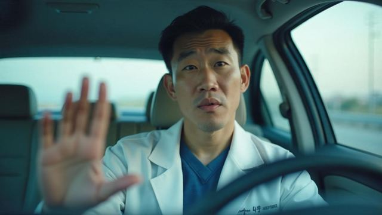
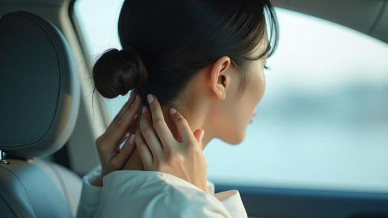
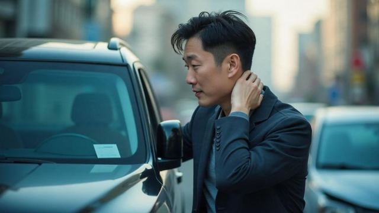
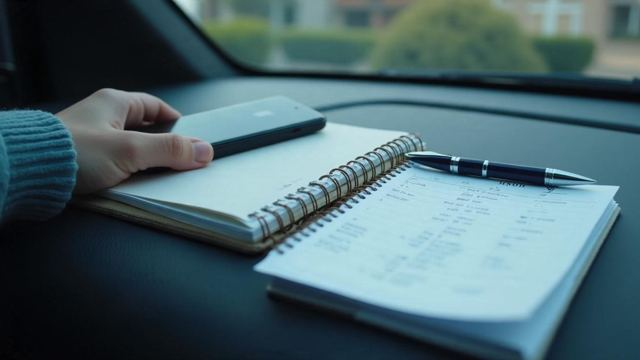
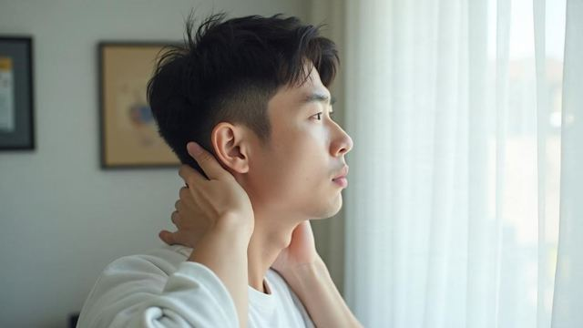
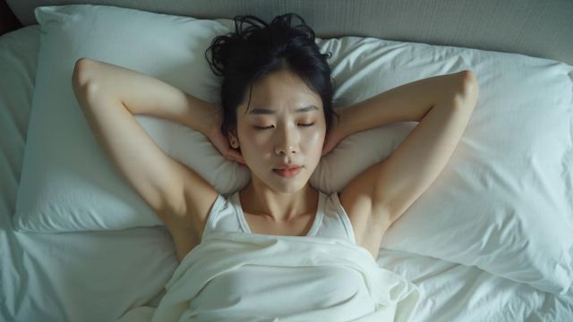
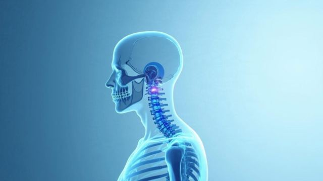
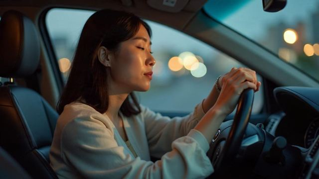
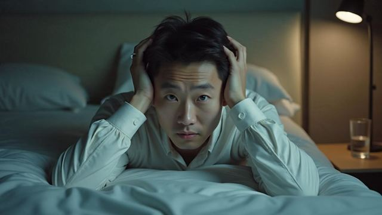
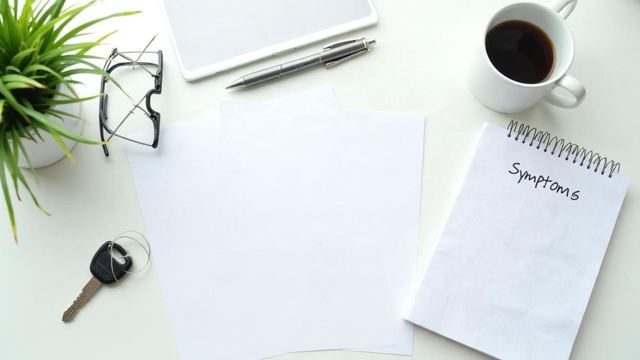

교통사고 뒤 목·허리가 뻐근하거나 두통, 어지럼, 불안으로 일상이 불편한 분을 위한 안내입니다. 노량진점은 응급 확인이 먼저 끝났는지 여쭌 뒤, 남은 불편을 사고 경위와 동작을 기준으로 살핍니다.
사고 뒤 며칠 지나서 아픈 이유
사고 당일에는 긴장 때문에 통증을 덜 느끼다가 다음 날이나 며칠 뒤에 목과 허리가 뻣뻣해지는 경우가 흔합니다. 그래서 사고 직후 괜찮아 보여도 몸의 변화를 며칠 동안 기록해 두는 것이 좋습니다.
특히 뒤에서 부딪힌 사고는 목이 순간적으로 앞뒤로 크게 흔들리면서 목과 어깨 근육이 긴장하기 쉽습니다. 사고 당시 자세와 충격 방향을 기억해 두시면 진료에 도움이 됩니다.
상담에서 자주 듣는 불편
몸의 통증뿐 아니라 잠을 설치거나 사고 장면이 떠오르는 등 마음의 불편도 함께 나타날 수 있습니다. 이런 변화도 사고 뒤 생길 수 있는 일이니 편하게 말씀해 주세요.
- 고개를 돌릴 때 목 뒤가 당김
- 앉았다 일어설 때 허리 통증
- 두통·어지럼이나 잠을 설침
- 운전대를 다시 잡기 두려운 마음
먼저 이렇게 여쭙니다
사고 전에 원래 있던 통증이 있었다면 함께 알려 주세요. 사고 뒤 새로 생긴 불편과 구분하는 데 도움이 됩니다.
- 사고 날짜와 상황(충돌 방향, 앉은 자리)
- 응급실이나 영상검사를 받았나요?
- 어떤 동작에서 불편한가요?
- 보험 접수 번호가 있나요?
- 사고 뒤 잠이나 기분은 어떤가요?
사고 뒤 생활에서 할 것
증상을 참고 미루다 보면 기록이 비어 나중에 설명하기 어려워질 수 있습니다. 불편이 있으면 가까운 때에 진료를 받고 날짜별 변화를 남겨 두세요.
- 통증 부위와 시간대를 날짜별로 메모하기
- 무리한 운동이나 장거리 운전 줄이기
- 진료 기록과 영수증 보관하기
- 잠이 안 오거나 불안이 이어지면 함께 말하기
한의원에서 함께 살피는 것
응급 확인 뒤 남은 불편을 동작 기준으로 보고, 필요하다고 판단될 때 침, 약침, 추나, 온열 장비, 한약 상담 등을 연결합니다. 자동차보험 진료가 가능하며 보험 접수 번호를 알려 주시면 절차를 안내합니다. 잠과 불안처럼 사고 뒤 마음의 변화도 함께 여쭙습니다.
사고 직후에는 통증이 여러 곳으로 퍼져 느껴지기도 해, 날짜별로 어느 부위가 먼저 편해지고 어느 부위가 남는지를 함께 기록합니다.
보험 진료는 이렇게 준비하세요
자동차보험으로 진료받으실 때는 보험사에 사고 접수를 먼저 하고 접수 번호를 받아 두세요. 접수 번호를 알려 주시면 한의원에서 확인 절차를 안내합니다. 보험 처리 범위나 기간은 보험사 기준을 따르므로 궁금한 점은 보험사에도 함께 확인하시는 것이 좋습니다.
- 보험사 사고 접수 번호
- 응급실·영상검사 기록(있다면)
- 다른 의료기관 진료 내역(있다면)
이럴 때는 다른 진료를 먼저 받으세요
사고 직후 괜찮다가 며칠 뒤 아래 증상이 새로 생겨도 바로 응급 진료를 받으세요.
- 의식을 잃었거나 심한 두통·구토가 있을 때: 응급실
- 팔다리 저림이나 힘 빠짐이 생길 때
- 숨쉬기 힘들거나 가슴·배가 아플 때
- 뼈가 부러진 것 같을 때: 영상검사 먼저
노량진점 진료는 이렇게 진행됩니다
접수 때 보험 접수 번호를 알려 주시면 됩니다. 상담에서 사고 경위와 불편한 동작을 듣고 진찰 후 오늘 상태에 맞는 치료를 진행합니다. 다음 진료에서는 지난번 기록부터 이어서 확인합니다.
처음 방문 때 사고 상황을 자세히 들려주시면 이후 진료에서는 처음부터 다시 설명하지 않으셔도 됩니다. 일정이 바쁘시면 평일 저녁이나 주말 진료시간을 이용해 보세요.
상도동·노량진에서
차량이 많은 노량진로·상도로와 언덕길이 이어지는 상도동 생활권에서는 가벼운 접촉 사고 뒤 불편을 미루기 쉽습니다. 노량진점은 상도역 3번 출구에서 약 400m, 노량진역 3번 출구에서는 마을버스 동작01번으로 오실 수 있고, 평일 저녁 8시까지 진료해 퇴근 뒤에도 들를 수 있습니다. 건물 옆 주차 공간 2면과 하늘빛교회 지하주차장도 이용할 수 있습니다.
자주 묻는 질문
상도동에서 교통사고 후 한의원 진료를 자동차보험으로 받을 수 있나요?
노량진점은 자동차보험 진료가 가능합니다. 보험 접수 번호를 알려 주시면 안내합니다.
사고 다음 날부터 아픈데 지금 가도 되나요?
네. 다만 심한 두통, 구토, 팔다리 힘 빠짐이 있으면 응급실을 먼저 가세요.
동승자도 진료받을 수 있나요?
동승자도 상담받으실 수 있습니다. 보험 처리 여부는 보험사 접수 내용을 확인해 주세요.
병원 치료와 한의원 치료를 같이 받아도 되나요?
다니는 의료기관과 받은 치료를 알려 주세요. 보험 처리 기준은 보험사에도 함께 확인하시는 것이 좋습니다.
준비할 서류가 있나요?
보험 접수 번호와 응급실·영상검사 기록이 있으면 가져오세요.
주말에도 진료하나요?
토·일·공휴일 오전 9시 30분부터 오후 3시까지 진료합니다.
사고 뒤 잠을 못 자는 것도 이야기해도 되나요?
네. 잠과 불안은 사고 뒤 함께 오는 경우가 많아 함께 여쭙습니다.
사고가 난 지 한참 지났는데도 진료받을 수 있나요?
상담받으실 수 있습니다. 보험 처리 가능 여부는 보험사에 먼저 확인해 주세요.
교통사고 후 한약 상담도 가능한가요?
가능합니다. 진찰 후 필요하다고 판단될 때 상담하며 보험 처리 여부도 함께 안내합니다.
감수: 좋은꿈참사랑한의원 노량진점 대표원장 이종호 · 마지막 확인 2026-11-24 · 일반적인 건강 정보이며 진단·치료를 대신하지 않습니다.
교통사고 후 글 모아 보기 (17편)

버스나 택시를 타고 가다 급정거로 몸이 쏠린 뒤 목과 허리가 아플 때는 어떻게 하나요?
급정거로 몸이 쏠리거나 손잡이·좌석에 부딪힌 뒤 목과 허리가 아프다면 먼저 응급 신호를 확인하고, 운행 회사나 보험사 접수 여부와 불편한 동작을 정리해 진료에서 사고 상황부터 차근차근 이야기합니다.
수정 2026-11-24
주말에 가벼운 접촉사고가 났는데, 한의원 진료는 언제 받으면 되나요?
주말 접촉사고 뒤에는 먼저 머리 부딪힘이나 심한 통증 같은 응급 신호가 없는지 확인하고, 응급 신호가 없다면 토·일·공휴일에도 오후 3시까지 진료하는 한의원에서 사고 상황과 불편한 동작을 이야기하며 살필 수 있습니다.
수정 2026-11-24

배달 일을 하다 사고가 난 뒤 다시 오토바이를 타기 전에 무엇을 확인하나요?
오토바이 사고 뒤 다시 운행하기 전에는 영상 검사로 큰 손상을 먼저 확인하고, 핸들을 쥐고 고개를 돌리는 동작이 편한지, 긴장되거나 놀라는 반응이 남아 있는지를 함께 살피며, 다시 타는 시기는 상태에 따라 달라 진료 때 함께 정합니다.
수정 2026-11-24
교통사고 뒤 어지럼과 두통이 계속될 때는 어떤 점을 확인하나요?
교통사고 뒤 어지럼과 두통은 의식 변화, 구토, 시야 이상이 있으면 즉시 병원에서 확인해야 하며 이후 남는 목 긴장성 두통과 어지럼은 사고 일시와 증상이 나타난 시점을 기준으로 살핍니다.
수정 2026-11-24

교통사고 뒤 출근길 지하철·버스에 서 있으면 목과 허리가 불편할 때는 어떻게 살피나요?
사고 뒤 다시 출근하는 시기에는 흔들리는 지하철·버스에서 버티는 동작이 목과 허리에 부담이 될 수 있어, 출근 경로와 서 있는 시간, 불편한 자세를 먼저 여쭙고 출퇴근 중 조절할 수 있는 방법과 확인이 필요한 신호를 함께 정리합니다.
수정 2026-11-24

교통사고 뒤 한의원에는 언제 가면 되나요?
교통사고 직후 의식이 흐리거나 심한 통증, 구토, 마비가 있으면 응급실이 먼저이고, 이후 남은 목·허리·어깨 불편이나 며칠 뒤 올라오는 통증은 한의원에서 상담할 수 있습니다.
수정 2026-11-23

교통사고 치료 중에는 무엇을 기록해 두면 좋을까요?
교통사고 치료는 통증 변화와 생활 불편을 기준으로 이어가기 때문에, 날짜별 통증 정도와 불편한 동작, 잠과 업무 지장을 간단히 기록해 두면 진료가 구체적이 됩니다.
수정 2026-11-23
뒷자리에 타고 있다가 사고가 났을 때도 살펴야 하나요?
뒷좌석 탑승자도 안전벨트 착용 여부와 앉은 자세에 따라 목, 어깨, 허리에 충격을 받을 수 있어, 탑승 위치와 자세, 통증 부위를 먼저 묻습니다.
수정 2026-11-23

교통사고 뒤 목이 뻐근하면서 머리도 아파요
사고 뒤 목의 긴장과 함께 두통이 오는 경우가 있지만, 머리를 부딪혔거나 두통이 점점 심해지면 먼저 영상 검사가 필요해, 응급 신호를 먼저 확인하고 목·어깨 상태를 살핍니다.
수정 2026-11-23

교통사고 다음 날부터 뻐근해지기 시작했어요
교통사고 직후에는 괜찮다가 다음 날이나 며칠 뒤에 목, 허리가 뻐근해지는 경우가 있어, 사고 경위와 통증이 시작된 시점, 불편한 동작을 먼저 묻고 응급 확인 여부를 확인합니다.
수정 2026-11-23
사고 뒤 운전대를 다시 잡기가 무서워요
사고 뒤에는 몸의 통증과 함께 운전에 대한 긴장과 불안이 남는 경우가 있어, 놀람이 이어지는 상황과 잠, 심장 두근거림을 먼저 묻고 마음의 긴장을 함께 살핍니다.
수정 2026-11-23

편타손상(채찍질 손상)은 무엇이고 어떤 때 병원을 먼저 가나요?
편타손상은 사고 순간 목이 앞뒤로 급하게 꺾이며 생기는 목 주변 손상을 말하며, 심한 두통·마비 같은 신호가 있으면 한의원보다 의료기관을 먼저 권합니다.
수정 2026-11-22
교통사고 뒤 목과 허리가 아플 때 어떤 순서로 살피고 무엇을 준비하나요?
교통사고 뒤에는 응급 증상과 골절 여부를 병원에서 먼저 확인하고, 이후 남은 목·허리 통증은 사고 일시와 아픈 동작을 기준으로 살피며 사고가 난 뒤 시간이 지나서 나타나는 증상도 이어서 확인합니다.
수정 2026-11-22
교통사고 뒤 자동차보험으로 한의원 치료를 받으려면 어떻게 진행되나요?
사고 뒤 한의원 진료는 사고 사실과 보험사 안내를 확인한 뒤 진행되며, 구체적인 처리 방법과 조건은 보험사와 의료기관에 먼저 확인하도록 안내합니다.
수정 2026-11-22

교통사고 뒤 운전이 무섭고 장면이 떠오를 때는 어떻게 지내면 되나요?
사고 뒤 운전이 두렵고 장면이 떠오르는 것은 흔한 반응이며, 천천히 익숙해지는 단계와 호흡, 잠 리듬을 챙기고 일상이 힘들 정도면 상담을 권합니다.
수정 2026-11-22

교통사고 뒤 어지럼, 메스꺼움, 불면은 어떻게 구분해서 살피나요?
사고 뒤 어지럼과 메스꺼움, 불면은 목 긴장, 놀람, 자세 변화 등 이유가 서로 달라, 언제 어떤 자세에서 오는지부터 구분해 살핍니다.
수정 2026-11-22

교통사고 합의 전에는 어떤 점을 먼저 확인해 두면 되나요?
합의 전에는 증상이 늦게 나타날 수 있다는 점, 진단 기록과 치료 경과를 정리해 두는 점, 불편이 남았다면 확인을 마친 뒤 결정한다는 점을 먼저 살펴 두도록 안내합니다.
수정 2026-11-22